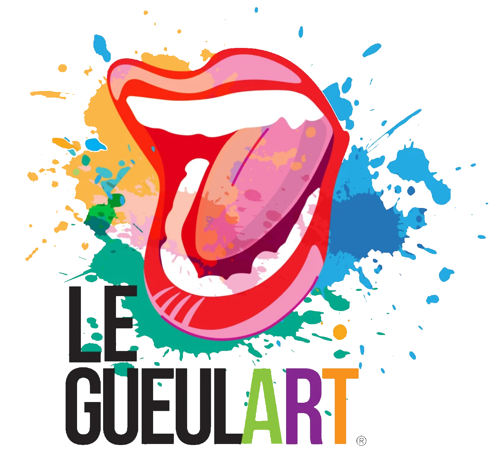

Papilles du coeur
Produits: Miel nature, Gâteries du Domaine Labranche, Confitures et sauces du Champ aux pots, saucisses de chèvre gourmande, relish et ketchup du bistro. Plats à emporter: chili con carne, rouleaux du printemps, ragoût de pattes, bœuf bourguignon, plats végétariens et bien plus.
Notre nouveau volet d’économie social, pour nous permettre de maintenir notre mission, de garder la culture vivante en milieu rural. Heures d’ouvertures : Mercredi, jeudi, vendredi 13h30 à 19h30 et samedi , dimanche 11h à 17h. Profiter de la nouvelle boutique de Cœur de Village pour venir déguster certains de nos produits maisons et de producteurs régionaux. Vous y trouvez aussi de l’artisanat d’artistes du coin dont les sacs de Marie-Ange Brassard, les boîtes de David Hills, les bijoux de Denise Fournier ainsi qu’une généreuse brocante d’antiquités.
En surcroît dans la galerie du gueulart678@gmail.com, une cinquantaine d’œuvres d’une vingtaine d’artistes membre.
Depuis le 17 mars 2021 ouverture des Papilles du cœur, le Gueulart a, par la même occasion, prit son envol. Dix peintures de vendues. Venez voir les nouvelles œuvres que nous exposons.